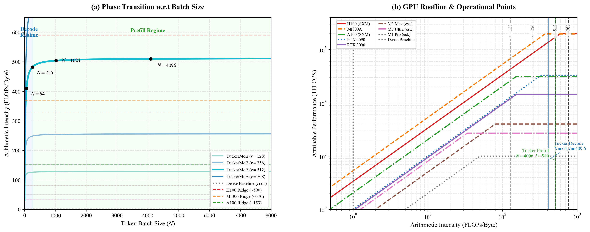

問題動機
- Transformer 瓶頸
- SSM vs MoE
讓大型 MoE 模型真正能在 Apple Silicon 本地推理
將傳統 Memory-bound MoE 轉為 Compute-bound
主線：問題動機 →Hybrid 架構 →TuckerMoE 核心 →訓練與實驗 →結論
Self-attention 在自迴歸推論中同時面臨時間與記憶體的平方級成長。
學界分別從「時間複雜度」與「模型容量」兩個方向突破瓶頸。
模型不是只換架構；資料管線也被設計成能支撐預訓練、Instruction Mode 與後續 CoT-SFT。
| 原始 BPE | 32,000 tokens |
| Instruction |
<|im_start|>,
<|im_end|>
|
| CoT |
<think>, </think>,
<final>, </final>
|
| Padding | [PAD] |
| 最終詞彙量 | 32,007 |
每個 Macro Block 由 4 個 Mamba-3 塊 + 1 個 GQA Transformer 塊組成，共 6 個 Macro Block = 30 層。
\(O(1)\) 解碼狀態
週期性全域回看
bf16, 16K ≈ 288 MiB

固定大小的隱藏狀態 \(h \in \mathbb{R}^{n \times p}\) 壓縮式記憶所有歷史資訊。
\(\bar{A}=\exp(\Delta A)\) — input-dependent 選擇性記憶，\(\Delta\) 控制遺忘/保留
chunk 內平行前綴和，chunk 間 carry 合併 — 兼顧速度與記憶體。
Top-K MoE 的兩大核心痛點，以及 Tucker 分解如何系統性解決。
✗ 獨立分解，無法捕捉跨專家冗餘。60% 壓縮下 PPL: 7 → 7168
✓ \(U^{(2)}, U^{(3)}\) 跨專家共享 → 82.87% 壓縮


On-the-fly 推論：無需物化完整專家權重，每一步只涉及低秩維度 \(r_2, r_3\)。
| 成分 | 形狀 | 共享 | 功能 |
|---|---|---|---|
| Router \(W_r\) | \(d_{\text{in}} \times E\) | — | softmax → top-2 |
| \(U_{\text{in}}\) | \(d_{\text{in}} \times r_3\) | 是 | 輸入投影至共享低秩子空間 |
| \(\mathcal{G}\) | \(r_1 \times r_3 \times r_2\) | 是 | 核心張量，跨維度交互 |
| \(U_{\text{out}}\) | \(r_2 \times d_{\text{out}}\) | 是 | 升回輸出空間 |
視覺化重點：傳統 MoE 在 HBM 搬完整 expert 權重；TuckerMoE 先降到 latent 空間，只 dispatch 小核心，再共享升回輸出維度。
每個 expert 都是完整 \(d \times d_{\text{ff}}\) 權重；decode 時 token 少、權重大，主要卡在 HBM 搬資料。
先用共享 \(U_{\text{in}}\) 把 token 壓到 \(r_3\)，top-2 dispatch 只處理 latent core，不搬完整 expert。
HBM I/O 約 11.3× 縮減；NCU 中 fused MoE DRAM peak 僅 4.4%，瓶頸轉向片上重用與排程。
內嵌 React
模擬器（來源：paper/td-moe-iclr2026/td-moe-simulator-react）：可拖曳進度看
A→B→C 分解、切換「張量分解 / 推論」對照 Dense 還原與 latent
流水線。右上角全螢幕可放大操作區（瀏覽器全螢幕
API，不支援時改為覆蓋全視窗）。
iframe 內為 ES module，請用 HTTP 開啟（勿用
file://）。在 …/presentation/ 執行
./serve_presentation.sh（預設埠
18886，伺服器根目錄為上一層
hybrid-mamba-15min/ 以便載入
../assets 圖檔）。請開
http://127.0.0.1:18886/presentation/ 或
http://127.0.0.1:18886/presentation/presentation.html。換埠：PORT=9000 ./serve_presentation.sh。重建模擬器：npx vite build --outDir
../../hybrid-mamba-15min/presentation/td-moe-simulator（於 td-moe-simulator-react 目錄）。

TuckerMoE 將 MoE 推論從 Memory-bound 推向 Compute-bound 區間。
| Dense MoE | 151.6 MiB/層 |
| TuckerMoE | 13.4 MiB/層 |
| 縮減 | 11.3× |
| 壓縮率 | Tucker | SVD | 改善 |
|---|---|---|---|
| 80% | 0.00099 | 0.00205 | −51.7% |
| 82.87% | 0.00135 | 0.00247 | −45.3% |
| 90% | 0.00267 | 0.00387 | −31.0% |
算術強度 \(\mathcal{I}^{\text{Tucker}} \to r_2=512\) → 越過 roofline 進入 compute-bound
符號對齊報告後，代入真參數（\(d,d_{\text{ff}},E,k,r_1,r_2,r_3,N\)）可得到簡報表內 **151.6 / 13.4 MiB·層⁻¹** 與 **11.3×** 縮減。
| \(r_3\) | \(\rightarrow\) | Dim_IN（輸入題目的維度大小） |
| \(r_2\) | \(\rightarrow\) | Dim_OUT（輸出答案的維度大小） |
| \(Nk\) | \(\rightarrow\) | Tokens（總題數） |
| \(E\) | \(\rightarrow\) | Experts（專家數量） |
x_up 單層，bf16）
設定與報告一致：\(d{=}1536\)，\(d_{\text{ff}}{=}6144\)，\(E{=}8\)，\(k{=}2\)，Tucker 秩 \((r_1,r_2,r_3){=}(32,512,256)\)（checkpoint 常用組合），decode 範例 \(N{=}64\)。權重項以 gate+up+down 合併近似為每 expert 一塊 \(2\,d\,d_{\text{ff}}\)。
| 分量 | Dense MoE | TuckerMoE |
|---|---|---|
| Activation I/O | \(2Nd = 196{,}608\,\text{B}\) | 同上 |
| Expert／共享權重 | \(E\cdot 2d\,d_{\text{ff}} \approx 1.51\times 10^{8}\,\text{B}\) | \(2(d\,r_3+r_2\,d_{\text{ff}})+E r_1+2 r_1 r_3 r_2 \approx 1.38\times 10^{7}\,\text{B}\) |
| Token permute（\(d\) vs \(r_3\)） | \(2kNd = 393{,}216\,\text{B}\) | \(2kNr_3 = 65{,}536\,\text{B}\) |
| HBM 合計／層 | \(\approx 151.6\,\text{MiB}\) | \(\approx 13.4\,\text{MiB}\) |
| 縮減 | \(151.6/13.4 \approx 11.3\times\)（與 §5.4.2 主表一致） | |
| \(N\) | 當前 decode batch 中 token 數 |
| \(d\) | 模型隱藏維度（hidden size） |
| \(d_{\text{ff}}\) | FFN 中間維度 |
| \(k\) | Top-k 路由中每個 token 啟用的 expert 數 |
| \(E\) | Experts（專家總數） |
| \(r_1,r_2,r_3\) | Tucker 秩（報告 checkpoint：32 / 512 / 256） |
算術強度 \(\mathcal{I}\)：Dense decode 約 \(\mathcal{O}(1)\)；Tucker 核心在同一組報告參數下可算出實數，並在 \(Nk\) 增大時向 \(r_2\) 逼近、跨過 ridge。
取 \(r_2{=}512,\; r_3{=}256,\; E{=}8,\; k{=}2\)。核心 GEMM 強度 \(\displaystyle \mathcal{I}^{\text{Tucker}}_{\text{core}}=\frac{2r_3r_2\cdot(Nk)}{2(Nk\,r_3+E\,r_3r_2)}\)，Dense 對照 \(\mathcal{I}^{\text{Dense}}_{\text{FFN}}\le Nk/E\)（bf16 語意與報告一致）。
| 情境 | \(N\)（batch tokens） | \(Nk\) | \(\mathcal{I}^{\text{Tucker}}_{\text{core}}\) | \(\mathcal{I}^{\text{Dense}}_{\text{FFN}}\le Nk/E\) |
|---|---|---|---|---|
| decode 小 batch（報告數值例） | 64 | 128 | \(\approx 15.5\) FLOPs/Byte | \(128/8=16\) |
| prefill 較大（對照） | 2048 | 4096 | \(\approx 256\)（\(Nk r_3\) 與 \(E r_3 r_2\) 同量級） | \(4096/8=512\) |
| 漸近極限 | 投影片箭頭：\(Nk\gg E r_2/r_3\)（此組 \(=16\)）。強度實際趨近 \(r_2\) 還需 \(Nk\,r_3\gg E\,r_3 r_2\)，即 \(Nk\gg E r_2=4096\)（例：\(N=2048\) 時 \(\mathcal{I}\approx256\)，續增則向 512） | 上界 \(r_2=512>400\)（ridge） | ||
H100 bf16 ridge \(\approx 400\) FLOPs/Byte；\(r_2=512>400\) 時核心可進入 compute-bound（報告原文）。NCU 上 fused MoE DRAM peak \(\approx 4.4\%\) 與此敘事一致。


\(\beta_{\text{LB}}=0.1\), \(\beta_{\text{Z}}=5 \times 10^{-3}\), \(n=66\) TuckerMoE modules
Logit 截斷：\(z' = 30\tanh(z/30\sqrt{d})\)
防止 fp16
overflow
\(E \sum_e \bar{m}_e \bar{p}_e\)
懲罰專家使用不均
\(\mathbb{E}[\text{logsumexp}(s)^2]\)
雙向正則化 logit
\(T: 2.0 \to 0.5\) — 初期高溫探索，後期低溫收斂。LayerScale init=\(10^{-2}\)
這個實驗是在消費級硬體預算下推進：以三張 RTX 3090 做分散式訓練，靠低秩 MoE 與 kernel fusion 控制顯存與頻寬壓力。
DDP / Accelerate
消費級 24 GB GPU
連續 token window
next-token LM
warmup → linear → cosine
預訓練建立 next-token 能力；SFT 把分佈轉成「user 條件 → assistant 回覆」的可部署互動格式。
ins_strict 過濾極短灌水與弱指令起手<|im_start|>user /
assistant
<think> 與
<final>
<s> 造成 token-space
drift
<|im_end|> 才計入
CE，讓模型同時學會回答與停止。

銜接 SFT 格式與線上推論：每步 model(x) 後以融合
bias 修正 logits，再以無 regex 的 token 序列 FSM 分支（emit /
speculative）。內嵌頁為固定 1920×1080 畫布並自動縮放至 iframe。
與互動模擬頁相同：請以 ./serve_presentation.sh 開啟
http://127.0.0.1:18886/presentation/presentation.html；原始圖檔可獨立開啟
inference_middleware_slide.html。
截至目前 checkpoint，loss、router temperature、gradient norm 與有效 token 數呈現同向穩定收斂。
| 指標 | 數值 | 詮釋 |
|---|---|---|
| 已完成 steps | 43,529 / 80,000 | 54.4%，尚餘約 36K steps |
| CE Loss（EMA） | ≈ 4.056 | 由初始約 14.9 穩定下降 |
| Total Loss | ≈ 4.26 | CE + LB + Z；正則項已進入穩態 |
| Gradient Norm（EMA） | ≈ 0.881 | 維持健康區間，未見爆炸 |
| Router Temperature | 0.5 | 已由 2.0 完成退火 |
| 已見 tokens | ≈ 2.80B | FineWeb-Edu 子集持續覆蓋 |
| 訓練耗時 | ≈ 196.5 hr | 平均約 20.3 s / step |


四項定量指標全數通過，確認無路由崩塌。
| 指標 | 門檻 | 實測 | 結果 |
|---|---|---|---|
| min entropy ratio | ≥0.28 | 0.294 | PASS |
| max top-1 share | ≤0.85 | 0.322 | PASS |
| dead-expert ratio | ≤0.5 | 0.000 | PASS |
| total NaN | =0 | 0 | PASS |
| Fused MoE | 66.9% time | DRAM 4.4% peak | 片上排程瓶頸 |
| Chunk Scan | 33.1% time | DRAM 75.3% peak | DRAM-heavy |


在相同訓練算力與每 token active FLOPs 下，TuckerMoE 不只擴增等效容量，也把 MoE decode 從 memory-bound 推向 compute-bound。
2.43B → 417M
151.6 → 13.4 MiB/層
NCU 顯示已非 DRAM-bound
| 設備 | Prefill | Decode | KV+State |
|---|---|---|---|
| M2 Pro bf16 | ~3,800 tok/s | ~42 tok/s | 22.3 MiB |
| M2 Pro 8-bit | ~3,650 tok/s | ~68 tok/s | 14.1 MiB |
| M1 bf16 | ~2,100 tok/s | ~27 tok/s | 22.3 MiB |